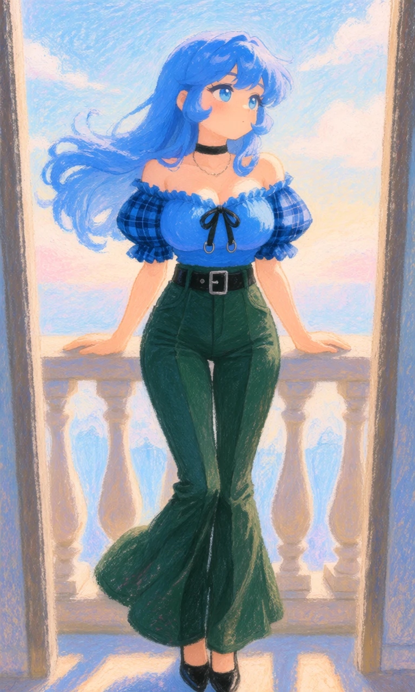
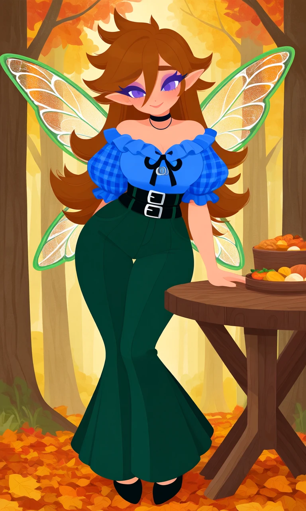

Bluebell Swing

Outfit Prompt
off-shoulder top, blue top, short sleeves, puffy sleeves, balloon sleeves, plaid sleeves, blue plaid, checkered pattern sleeves, ruffle collar, sweetheart neckline, decorative bow, metal rings on bow, high-waisted pants, dark green pants, blackish-green flared pants, bell-bottom pants, wide belt, black belt, silver buckle, double belt loops, black pointed shoes, simple footwear, black choker, thin necklace,
Outfit Examples



